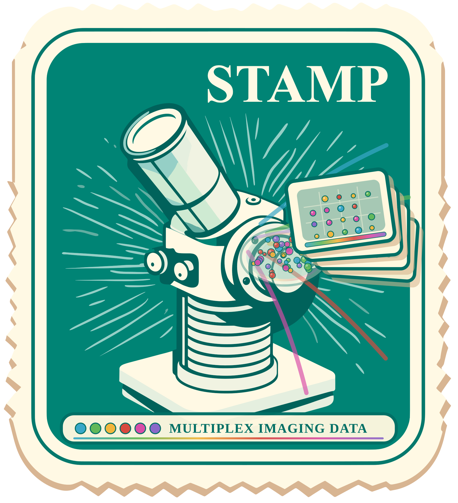
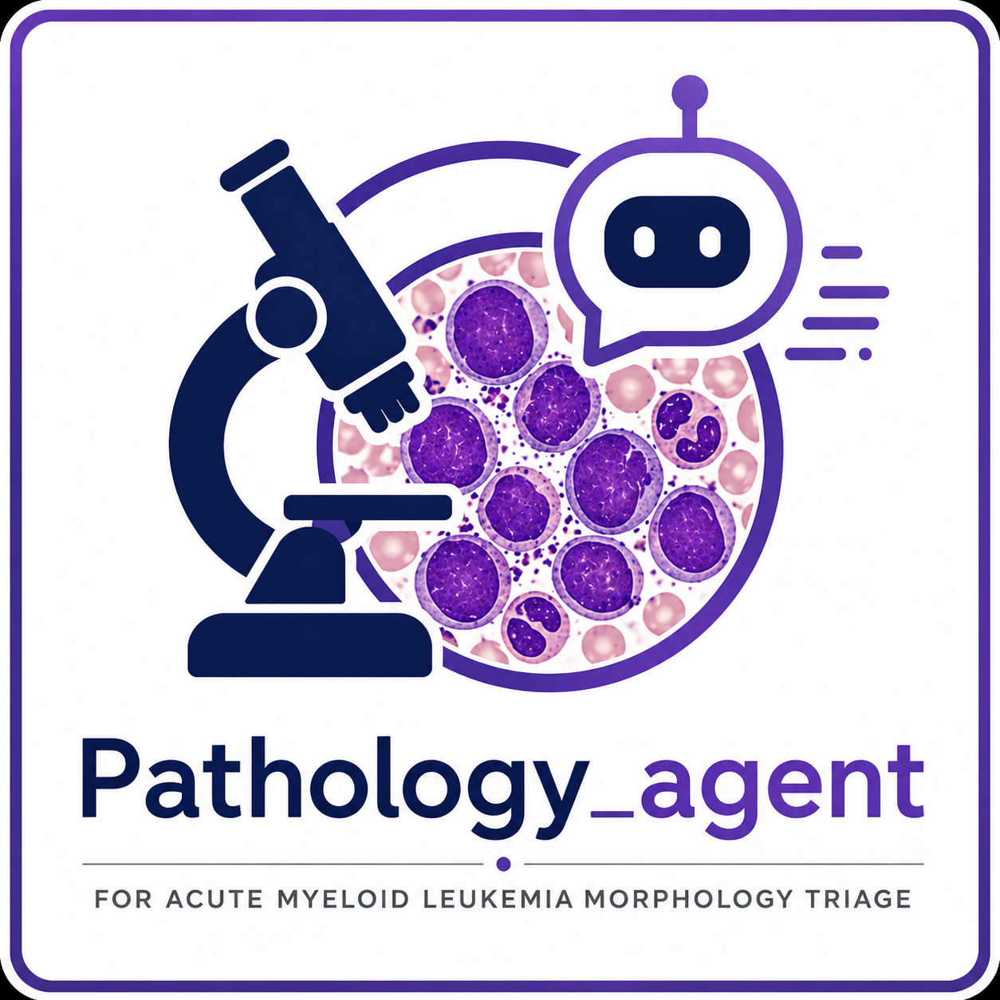
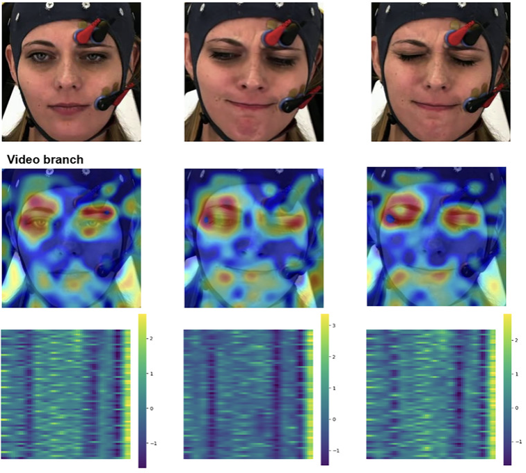

Work
Projects, research systems, and clinical AI tools.
The home page stays selective; this is the fuller archive. I keep the masonry layout here so project cards can stay visually varied without making the front page feel crowded.
-

STAMP-Multiplex
An end-to-end deep-learning pipeline for multiplex images, built to support pathology workflows from image ingestion through model prediction and analysis.
-

Pathology Agent
An intelligent WSI agent combining embedding-based retrieval with vision-language model reasoning to deliver robust and explainable region-of-interest ranking in histopathology slides.
-

STAMP
An open-source computational pathology pipeline from the KatherLab team for discovering and evaluating image-based biomarkers from gigapixel histopathology slides without pixel-level annotations. The peer-reviewed workflow helps clinical researchers and ML engineers run reproducible studies across multiple tumor types.
-

Multiple Appropriate Facial Reaction Generation
Research on generating multiple appropriate and diverse facial reactions in dyadic interactions using latent diffusion models. Work published at two international venues.
-

Nursing Simulation
A full web application leveraging ChatGPT to generate detailed patient scenarios and simulation-based training content for healthcare education, enhancing clinical learning through AI-driven interactive scenarios.
-

-

TalkingChat
A child-friendly chatbot with a changable talking face and voice, making the conversation feel personal, playful, and easy to engage with.